pacman::p_load(sf,tmap,tidyverse)Hands-On Exercise 02: Thematic Mapping and Geovisualisation with R
1. Overview
Thematic mapping uses map symbols to visualize invisible geographic properties, such as population, temperature, crime rate, and property prices. Geovisualization enhances understanding by graphically representing places, phenomena, or processes, engaging the human eye-brain system for spatial cognition. This hands-on exercise will be on how to create accurate and functional choropleth maps using the tmap package in R.
2. Packages Used
In this hands-on exercise, the key R package use is tmap package in R. Beside tmap package, four other R packages will be used. They are:
readr for importing delimited text file,
tidyr for tidying data,
dplyr for wrangling data and
sf for handling geospatial data.
Since readr, tidyr and dplyr are part of tidyverse package. Therefore, we do not need to install them individually.
3. Importing Data into R
3.1 Datasets
Two data set will be used to create the choropleth map. They are:
Master Plan 2014 Subzone Boundary (Web) (i.e.
MP14_SUBZONE_WEB_PL) in ESRI shapefile format. It can be downloaded at data.gov.sg This is a geospatial data. It consists of the geographical boundary of Singapore at the planning subzone level. The data is based on URA Master Plan 2014.Singapore Residents by Planning Area / Subzone, Age Group, Sex and Type of Dwelling, June 2011-2020 in csv format (i.e.
respopagesextod2011to2020.csv). This is an aspatial data fie. It can be downloaded at Department of Statistics, Singapore Although it does not contain any coordinates values, but it’s PA and SZ fields can be used as unique identifiers to geocode toMP14_SUBZONE_WEB_PLshapefile.
3.2 Importing Geospatial Data into R
We will using st_read() function from sf package to import shape file into R as a data frame named mpsz.
mpsz <- st_read(dsn = "data/geospatial/MasterPlan2014SubzoneBoundaryWebSHP", layer = "MP14_SUBZONE_WEB_PL")Reading layer `MP14_SUBZONE_WEB_PL' from data source
`/Users/mingwei/Desktop/SMU/Y3S1/IS415/xXxPMWxXx/IS415-GAA/Hands-on_Ex/Hands-on_Ex02/data/geospatial/MasterPlan2014SubzoneBoundaryWebSHP'
using driver `ESRI Shapefile'
Simple feature collection with 323 features and 15 fields
Geometry type: MULTIPOLYGON
Dimension: XY
Bounding box: xmin: 2667.538 ymin: 15748.72 xmax: 56396.44 ymax: 50256.33
Projected CRS: SVY21To examine the content of mpsz:
mpszSimple feature collection with 323 features and 15 fields
Geometry type: MULTIPOLYGON
Dimension: XY
Bounding box: xmin: 2667.538 ymin: 15748.72 xmax: 56396.44 ymax: 50256.33
Projected CRS: SVY21
First 10 features:
OBJECTID SUBZONE_NO SUBZONE_N SUBZONE_C CA_IND PLN_AREA_N
1 1 1 MARINA SOUTH MSSZ01 Y MARINA SOUTH
2 2 1 PEARL'S HILL OTSZ01 Y OUTRAM
3 3 3 BOAT QUAY SRSZ03 Y SINGAPORE RIVER
4 4 8 HENDERSON HILL BMSZ08 N BUKIT MERAH
5 5 3 REDHILL BMSZ03 N BUKIT MERAH
6 6 7 ALEXANDRA HILL BMSZ07 N BUKIT MERAH
7 7 9 BUKIT HO SWEE BMSZ09 N BUKIT MERAH
8 8 2 CLARKE QUAY SRSZ02 Y SINGAPORE RIVER
9 9 13 PASIR PANJANG 1 QTSZ13 N QUEENSTOWN
10 10 7 QUEENSWAY QTSZ07 N QUEENSTOWN
PLN_AREA_C REGION_N REGION_C INC_CRC FMEL_UPD_D X_ADDR
1 MS CENTRAL REGION CR 5ED7EB253F99252E 2014-12-05 31595.84
2 OT CENTRAL REGION CR 8C7149B9EB32EEFC 2014-12-05 28679.06
3 SR CENTRAL REGION CR C35FEFF02B13E0E5 2014-12-05 29654.96
4 BM CENTRAL REGION CR 3775D82C5DDBEFBD 2014-12-05 26782.83
5 BM CENTRAL REGION CR 85D9ABEF0A40678F 2014-12-05 26201.96
6 BM CENTRAL REGION CR 9D286521EF5E3B59 2014-12-05 25358.82
7 BM CENTRAL REGION CR 7839A8577144EFE2 2014-12-05 27680.06
8 SR CENTRAL REGION CR 48661DC0FBA09F7A 2014-12-05 29253.21
9 QT CENTRAL REGION CR 1F721290C421BFAB 2014-12-05 22077.34
10 QT CENTRAL REGION CR 3580D2AFFBEE914C 2014-12-05 24168.31
Y_ADDR SHAPE_Leng SHAPE_Area geometry
1 29220.19 5267.381 1630379.3 MULTIPOLYGON (((31495.56 30...
2 29782.05 3506.107 559816.2 MULTIPOLYGON (((29092.28 30...
3 29974.66 1740.926 160807.5 MULTIPOLYGON (((29932.33 29...
4 29933.77 3313.625 595428.9 MULTIPOLYGON (((27131.28 30...
5 30005.70 2825.594 387429.4 MULTIPOLYGON (((26451.03 30...
6 29991.38 4428.913 1030378.8 MULTIPOLYGON (((25899.7 297...
7 30230.86 3275.312 551732.0 MULTIPOLYGON (((27746.95 30...
8 30222.86 2208.619 290184.7 MULTIPOLYGON (((29351.26 29...
9 29893.78 6571.323 1084792.3 MULTIPOLYGON (((20996.49 30...
10 30104.18 3454.239 631644.3 MULTIPOLYGON (((24472.11 29...
Note
It will only display the first 10 rows of the data frame, because in R by default, only a limited number of are displayed, often the first 10 rows only.
To display more rows, we can use functions like print() , head() or modifying R’s global settings (Tools > Global > Console).
print(mpsz, n = 20) # This will print the first 20 rowsSimple feature collection with 323 features and 15 fields
Geometry type: MULTIPOLYGON
Dimension: XY
Bounding box: xmin: 2667.538 ymin: 15748.72 xmax: 56396.44 ymax: 50256.33
Projected CRS: SVY21
First 20 features:
OBJECTID SUBZONE_NO SUBZONE_N SUBZONE_C CA_IND
1 1 1 MARINA SOUTH MSSZ01 Y
2 2 1 PEARL'S HILL OTSZ01 Y
3 3 3 BOAT QUAY SRSZ03 Y
4 4 8 HENDERSON HILL BMSZ08 N
5 5 3 REDHILL BMSZ03 N
6 6 7 ALEXANDRA HILL BMSZ07 N
7 7 9 BUKIT HO SWEE BMSZ09 N
8 8 2 CLARKE QUAY SRSZ02 Y
9 9 13 PASIR PANJANG 1 QTSZ13 N
10 10 7 QUEENSWAY QTSZ07 N
11 11 12 KENT RIDGE QTSZ12 N
12 12 6 ALEXANDRA NORTH BMSZ06 N
13 13 1 MARINA EAST MESZ01 Y
14 14 5 INSTITUTION HILL RVSZ05 Y
15 15 1 ROBERTSON QUAY SRSZ01 Y
16 16 1 JURONG ISLAND AND BUKOM WISZ01 N
17 17 3 SUDONG WISZ03 N
18 18 2 SEMAKAU WISZ02 N
19 19 2 SOUTHERN GROUP SISZ02 N
20 20 1 SENTOSA SISZ01 N
PLN_AREA_N PLN_AREA_C REGION_N REGION_C INC_CRC
1 MARINA SOUTH MS CENTRAL REGION CR 5ED7EB253F99252E
2 OUTRAM OT CENTRAL REGION CR 8C7149B9EB32EEFC
3 SINGAPORE RIVER SR CENTRAL REGION CR C35FEFF02B13E0E5
4 BUKIT MERAH BM CENTRAL REGION CR 3775D82C5DDBEFBD
5 BUKIT MERAH BM CENTRAL REGION CR 85D9ABEF0A40678F
6 BUKIT MERAH BM CENTRAL REGION CR 9D286521EF5E3B59
7 BUKIT MERAH BM CENTRAL REGION CR 7839A8577144EFE2
8 SINGAPORE RIVER SR CENTRAL REGION CR 48661DC0FBA09F7A
9 QUEENSTOWN QT CENTRAL REGION CR 1F721290C421BFAB
10 QUEENSTOWN QT CENTRAL REGION CR 3580D2AFFBEE914C
11 QUEENSTOWN QT CENTRAL REGION CR 601BA309A1AAC731
12 BUKIT MERAH BM CENTRAL REGION CR 4DC4BF8D86594CBF
13 MARINA EAST ME CENTRAL REGION CR 782A2FAF53029A34
14 RIVER VALLEY RV CENTRAL REGION CR C3C22D1EE31757BD
15 SINGAPORE RIVER SR CENTRAL REGION CR DF71BB5EC3C9FFD1
16 WESTERN ISLANDS WI WEST REGION WR 699F7210FBF1AFA8
17 WESTERN ISLANDS WI WEST REGION WR F718C723E08FBD51
18 WESTERN ISLANDS WI WEST REGION WR E69207D4F76DEEA3
19 SOUTHERN ISLANDS SI CENTRAL REGION CR 5809FC547293EA2D
20 SOUTHERN ISLANDS SI CENTRAL REGION CR A6FCDC9C447952CB
FMEL_UPD_D X_ADDR Y_ADDR SHAPE_Leng SHAPE_Area
1 2014-12-05 31595.84 29220.19 5267.381 1630379.3
2 2014-12-05 28679.06 29782.05 3506.107 559816.2
3 2014-12-05 29654.96 29974.66 1740.926 160807.5
4 2014-12-05 26782.83 29933.77 3313.625 595428.9
5 2014-12-05 26201.96 30005.70 2825.594 387429.4
6 2014-12-05 25358.82 29991.38 4428.913 1030378.8
7 2014-12-05 27680.06 30230.86 3275.312 551732.0
8 2014-12-05 29253.21 30222.86 2208.619 290184.7
9 2014-12-05 22077.34 29893.78 6571.323 1084792.3
10 2014-12-05 24168.31 30104.18 3454.239 631644.3
11 2014-12-05 23464.84 29725.37 7439.548 1826848.6
12 2014-12-05 26548.25 30519.39 2907.051 293706.4
13 2014-12-05 32344.05 30103.25 6470.950 1844060.7
14 2014-12-05 28465.40 30711.22 2842.526 392563.3
15 2014-12-05 28416.85 30409.36 4995.758 506589.0
16 2014-12-05 13012.88 27225.87 68083.936 36707720.9
17 2014-12-05 15931.76 19579.07 24759.066 4207271.1
18 2014-12-05 21206.33 20465.81 18703.681 4963787.1
19 2014-12-05 29815.09 23412.59 25626.977 2206319.5
20 2014-12-05 27593.94 25813.35 17496.194 4919132.4
geometry
1 MULTIPOLYGON (((31495.56 30...
2 MULTIPOLYGON (((29092.28 30...
3 MULTIPOLYGON (((29932.33 29...
4 MULTIPOLYGON (((27131.28 30...
5 MULTIPOLYGON (((26451.03 30...
6 MULTIPOLYGON (((25899.7 297...
7 MULTIPOLYGON (((27746.95 30...
8 MULTIPOLYGON (((29351.26 29...
9 MULTIPOLYGON (((20996.49 30...
10 MULTIPOLYGON (((24472.11 29...
11 MULTIPOLYGON (((23332.77 30...
12 MULTIPOLYGON (((26231.96 30...
13 MULTIPOLYGON (((33214.62 29...
14 MULTIPOLYGON (((28481.45 30...
15 MULTIPOLYGON (((28087.34 30...
16 MULTIPOLYGON (((14557.7 304...
17 MULTIPOLYGON (((15772.59 21...
18 MULTIPOLYGON (((19843.41 21...
19 MULTIPOLYGON (((29712.51 23...
20 MULTIPOLYGON (((26858.1 266...head(mpsz, 10) # Default is 6 rows, constraint by the global setting(10 rows) as wellSimple feature collection with 10 features and 15 fields
Geometry type: MULTIPOLYGON
Dimension: XY
Bounding box: xmin: 20660.53 ymin: 28369.47 xmax: 32362.39 ymax: 30684.55
Projected CRS: SVY21
OBJECTID SUBZONE_NO SUBZONE_N SUBZONE_C CA_IND PLN_AREA_N
1 1 1 MARINA SOUTH MSSZ01 Y MARINA SOUTH
2 2 1 PEARL'S HILL OTSZ01 Y OUTRAM
3 3 3 BOAT QUAY SRSZ03 Y SINGAPORE RIVER
4 4 8 HENDERSON HILL BMSZ08 N BUKIT MERAH
5 5 3 REDHILL BMSZ03 N BUKIT MERAH
6 6 7 ALEXANDRA HILL BMSZ07 N BUKIT MERAH
7 7 9 BUKIT HO SWEE BMSZ09 N BUKIT MERAH
8 8 2 CLARKE QUAY SRSZ02 Y SINGAPORE RIVER
9 9 13 PASIR PANJANG 1 QTSZ13 N QUEENSTOWN
10 10 7 QUEENSWAY QTSZ07 N QUEENSTOWN
PLN_AREA_C REGION_N REGION_C INC_CRC FMEL_UPD_D X_ADDR
1 MS CENTRAL REGION CR 5ED7EB253F99252E 2014-12-05 31595.84
2 OT CENTRAL REGION CR 8C7149B9EB32EEFC 2014-12-05 28679.06
3 SR CENTRAL REGION CR C35FEFF02B13E0E5 2014-12-05 29654.96
4 BM CENTRAL REGION CR 3775D82C5DDBEFBD 2014-12-05 26782.83
5 BM CENTRAL REGION CR 85D9ABEF0A40678F 2014-12-05 26201.96
6 BM CENTRAL REGION CR 9D286521EF5E3B59 2014-12-05 25358.82
7 BM CENTRAL REGION CR 7839A8577144EFE2 2014-12-05 27680.06
8 SR CENTRAL REGION CR 48661DC0FBA09F7A 2014-12-05 29253.21
9 QT CENTRAL REGION CR 1F721290C421BFAB 2014-12-05 22077.34
10 QT CENTRAL REGION CR 3580D2AFFBEE914C 2014-12-05 24168.31
Y_ADDR SHAPE_Leng SHAPE_Area geometry
1 29220.19 5267.381 1630379.3 MULTIPOLYGON (((31495.56 30...
2 29782.05 3506.107 559816.2 MULTIPOLYGON (((29092.28 30...
3 29974.66 1740.926 160807.5 MULTIPOLYGON (((29932.33 29...
4 29933.77 3313.625 595428.9 MULTIPOLYGON (((27131.28 30...
5 30005.70 2825.594 387429.4 MULTIPOLYGON (((26451.03 30...
6 29991.38 4428.913 1030378.8 MULTIPOLYGON (((25899.7 297...
7 30230.86 3275.312 551732.0 MULTIPOLYGON (((27746.95 30...
8 30222.86 2208.619 290184.7 MULTIPOLYGON (((29351.26 29...
9 29893.78 6571.323 1084792.3 MULTIPOLYGON (((20996.49 30...
10 30104.18 3454.239 631644.3 MULTIPOLYGON (((24472.11 29...3.3 Importing Attribute Data into R
Next, we will use read_csv() function of readr package to import respopagsex2011to2020.csv file into RStudio and save the file into an R dataframe called popdata.
popdata <- read_csv("data/aspatial/respopagesextod2011to2020.csv")Rows: 984656 Columns: 7
── Column specification ────────────────────────────────────────────────────────
Delimiter: ","
chr (5): PA, SZ, AG, Sex, TOD
dbl (2): Pop, Time
ℹ Use `spec()` to retrieve the full column specification for this data.
ℹ Specify the column types or set `show_col_types = FALSE` to quiet this message.3.4 Data Preparation
Before a thematic map can be prepared, we are required to prepare a data table with year 2020 values. The data table should include the variables PA, SZ, YOUNG, ECONOMY ACTIVE, AGED, TOTAL, DEPENDENCY.
PA: Planning Area,SZ: Subzone,YOUNG: age group 0 to 4 until age group 20 to 24,ECONOMY ACTIVE: age group 25-29 until age group 60-64,AGED: age group 65 and above,TOTAL: all age group, andDEPENDENCY: the ratio between young and aged against economy active group
3.4.1 Data Wrangling
The following data wrangling and transformation functions will be used:
pivot_wider() of
tidyrpackage, andmutate(), filter(), group_by() and select() of
dplyrpackage
popdata2020 <- popdata %>%
filter(Time == 2020) %>%
group_by(PA, SZ, AG) %>%
summarise(`POP` = sum(`Pop`)) %>%
ungroup()%>%
pivot_wider(names_from=AG,
values_from=POP) %>%
mutate(YOUNG = rowSums(.[3:6])
+rowSums(.[14])) %>%
mutate(`ECONOMY ACTIVE` = rowSums(.[7:13])+
rowSums(.[15]))%>%
mutate(`AGED`=rowSums(.[16:21])) %>%
mutate(`TOTAL`=rowSums(.[3:21])) %>%
mutate(`DEPENDENCY` = (`YOUNG` + `AGED`)
/`ECONOMY ACTIVE`) %>%
select(`PA`, `SZ`, `YOUNG`,
`ECONOMY ACTIVE`, `AGED`,
`TOTAL`, `DEPENDENCY`)`summarise()` has grouped output by 'PA', 'SZ'. You can override using the
`.groups` argument.
Warning
YOUNG => instead of including col 12 (50_to_54), we should including col 14(5_to_9) from popdata.
ECONOMY ACTIVE => Instead of from col 7 to 11 and 13 to 15, it should be 7 to 13(until 55_to_59) and col 15(60_to_64)
3.4.2 Joining the attribute data and geospatial data
Before we can perform the georelational join, we need to convert the values in PA and SZ fields to uppercase. This is because the values of PA and SZ fields are made up of upper- and lowercase. SUBZONE_N and PLN_AREA_N are in uppercase.
popdata2020 <- popdata2020 %>%
mutate_at(.vars = vars(PA, SZ),
.funs = list(toupper)) %>%
filter(`ECONOMY ACTIVE` > 0)After convert PA and SZ field to uppercase, then we can use left_join() of dplyr to join the geographical data and attribute table using planning subzone name e.g. SUBZONE_N and SZ as the common identifier.
mpsz_pop2020 <- left_join(mpsz, popdata2020, by = c("SUBZONE_N" = "SZ"))Thing to learn from the code chunk above:
- left_join() of dplyr package is used with
mpszsimple feature data frame as the left data table is to ensure that the output will be a simple features data frame.
write_rds(mpsz_pop2020, "data/rds/mpszpop2020.rds")
Tip
RDS files take less space than textual data formats like CSV, JSON(CSV file is about 64MB and RDS file only 1MB). RDS also reads and writes faster than those.
4. Choropleth Mapping Geospatial Data Using tmap
Choropleth mapping involves the symbolisation of enumeration units, such as countries, provinces, states, counties or census units, using area patterns or graduated colors. For example, a social scientist may need to use a choropleth map to portray the spatial distribution of aged population of Singapore by Master Plan 2014 Subzone Boundary.
Two approaches can be used to prepare thematic map using tmap, they are:
Plotting a thematic map quickly by using qtm().
Plotting highly customisable thematic map by using tmap elements.
4.1 Plotting a choropleth map quickly by using qtm()
The easiest and quickest to draw a choropleth map using tmap is using qtm(). It is concise and provides a good default visualisation in many cases.
tmap_mode("plot")tmap mode set to plottingqtm(mpsz_pop2020,
fill = "DEPENDENCY")
tmap_mode() with “plot” option is used to produce a static map. For interactive mode, “view” option should be used.
fill argument is used to map the attribute (i.e. DEPENDENCY)
4.2 Creating a choropleth map by using tmap’s elements
Despite its usefulness of drawing a choropleth map quickly and easily, the disadvantge of qtm() is that it makes aesthetics of individual layers harder to control. To draw a high quality cartographic choropleth map as shown in the figure below, tmap’s drawing elements should be used.
tm_shape(mpsz_pop2020)+
tm_fill("DEPENDENCY",
style = "quantile",
palette = "Blues",
title = "Dependency ratio") +
tm_layout(main.title = "Distribution of Dependency Ratio by planning subzone",
main.title.position = "center",
main.title.size = 1.2,
legend.height = 0.45,
legend.width = 0.35,
frame = TRUE) +
tm_borders(alpha = 0.5) +
tm_compass(type="8star", size = 2) +
tm_scale_bar() +
tm_grid(alpha =0.2) +
tm_credits("Source: Planning Sub-zone boundary from Urban Redevelopment Authorithy (URA)\n and Population data from Department of Statistics DOS",
position = c("left", "bottom"))Next, we will be using tmap functions that can be used to plot additional element in the map above.
4.2.1 Drawing a base map using tm_shape()
The basic building block of tmap is tm_shape() followed by one or more layer elemments such as tm_fill() and tm_polygons().
tm_shape() is used to define the input data (i.e mpsz_pop2020) and tm_polygons() is used to draw the planning subzone polygons
tm_shape(mpsz_pop2020) + tm_polygons()
4.2.2 Drawing a choropleth map using tm_polygons()
To draw a choropleth map showing the geographical distribution of a selected variable by planning subzone, we just need to assign the target variable such as Dependency to tm_polygons().
tm_shape(mpsz_pop2020) + tm_polygons("DEPENDENCY")
Things to learn from tm_polygons():
The default interval binning used to draw the choropleth map is called “pretty”. A detailed discussion of the data classification methods supported by tmap will be provided in sub-section 4.3.
The default colour scheme used is
YlOrRdof ColorBrewer. You will learn more about the color scheme in sub-section 4.4.By default, Missing value will be shaded in grey.
4.2.3 Drawing a choropleth map using tm_fill() and tm_border()
Actually, tm_polygons() is a wraper of tm_fill() and tm_border(). tm_fill() shades the polygons by using the default colour scheme and tm_borders() adds the borders of the shapefile onto the choropleth map.
tm_shape(mpsz_pop2020) + tm_fill("DEPENDENCY")
Notice that the planning subzones are shared according to the respective dependecy values
To add the boundary of the planning subzones, tm_borders will be used as shown in the code chunk below.
tm_shape(mpsz_pop2020) + tm_fill("DEPENDENCY") +
tm_borders(col = "blue" ,lwd = 0.5, lty = "longdash", alpha = 1)Notice that light-gray border lines have been added on the choropleth map.
Note
The alpha argument is used to define transparency number between 0 (totally transparent) and 1 (not transparent). By default, the alpha value of the col is used (normally 1).
Beside alpha argument, there are three other arguments for tm_borders(), they are:
col = border colour,
lwd = border line width. The default is 1, and
lty = border line type. The default is “solid”.
"blank","solid","dashed","dotted","dotdash","longdash", or"twodash", where"blank"uses ‘invisible lines’ (i.e., does not draw them).
4.3 Data classification methods of tmap
Most choropleth maps employ some methods of data classification. The point of classification is to take a large number of observations and group them into data ranges or classes.
tmap provides a total ten data classification methods, namely: fixed, sd, equal, pretty (default), quantile, kmeans, hclust, bclust, fisher, and jenks.
To define a data classification method, the style argument of tm_fill() or tm_polygons() will be used.
4.3.1 Plotting choropleth maps with built-in classification methods
tmap provides a total ten data classification methods:
quantile,
equal,
pretty (default),
fixed,
sd,
kmeans,
hclust,
bclust,
fisher, and
jenks.
tm_shape(mpsz_pop2020)+
tm_fill("DEPENDENCY",
n = 5,
style = "quantile") +
tm_borders(alpha = 0.5)
equal data classification method is used.
tm_shape(mpsz_pop2020)+
tm_fill("DEPENDENCY",
n = 5,
style = "equal") +
tm_borders(col = "red" ,lwd = 0.5, alpha = 0.5)
Tip
The distribution of quantile data classification method are more evenly distributed then equal data classification method.
Other data classification methods.
pretty(default)
tm_shape(mpsz_pop2020)+
tm_fill("DEPENDENCY",
n = 5) +
tm_borders(alpha = 0.5)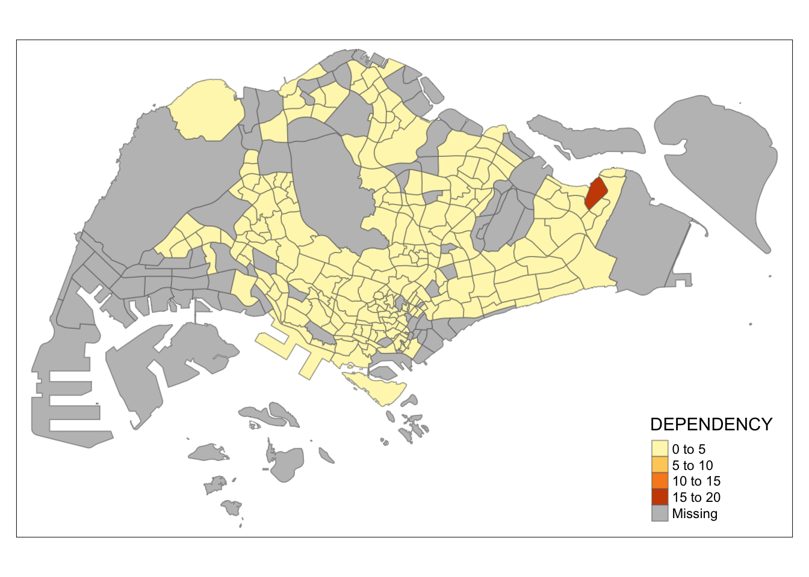
fixed
tm_shape(mpsz_pop2020)+
tm_fill("DEPENDENCY",
n = 5,
style = "fixed",
breaks = c(0, 0.5, 1, 1.5, 2, Inf)) +
tm_borders(alpha = 0.5)
Note
For style = “fixed”, we need to provide a set of fixed breaks manually. If breaks are not supplied, it leads to Error in if (lw == -Inf) lw <- breaks[2] : argument is of length zero, as the function doesn’t know how to classify the data.
*** With help from ChatGPT ***
sd
tm_shape(mpsz_pop2020)+
tm_fill("DEPENDENCY",
n = 5,
style = "sd") +
tm_borders(alpha = 0.5)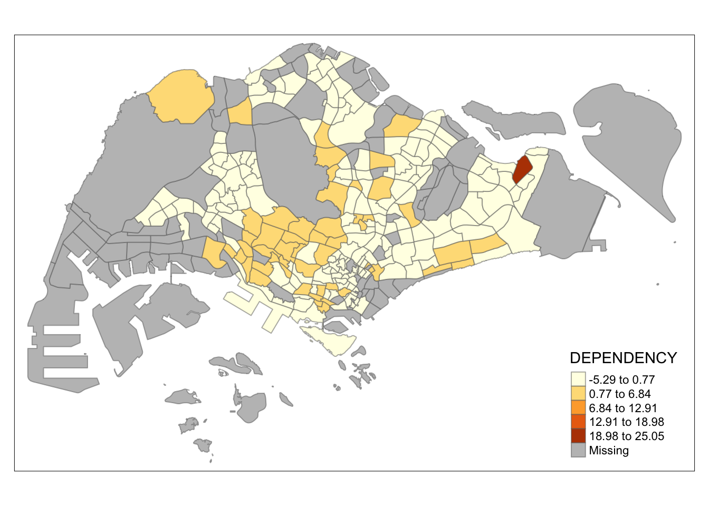
kmeans
tm_shape(mpsz_pop2020)+
tm_fill("DEPENDENCY",
n = 5,
style = "kmeans") +
tm_borders(alpha = 0.5)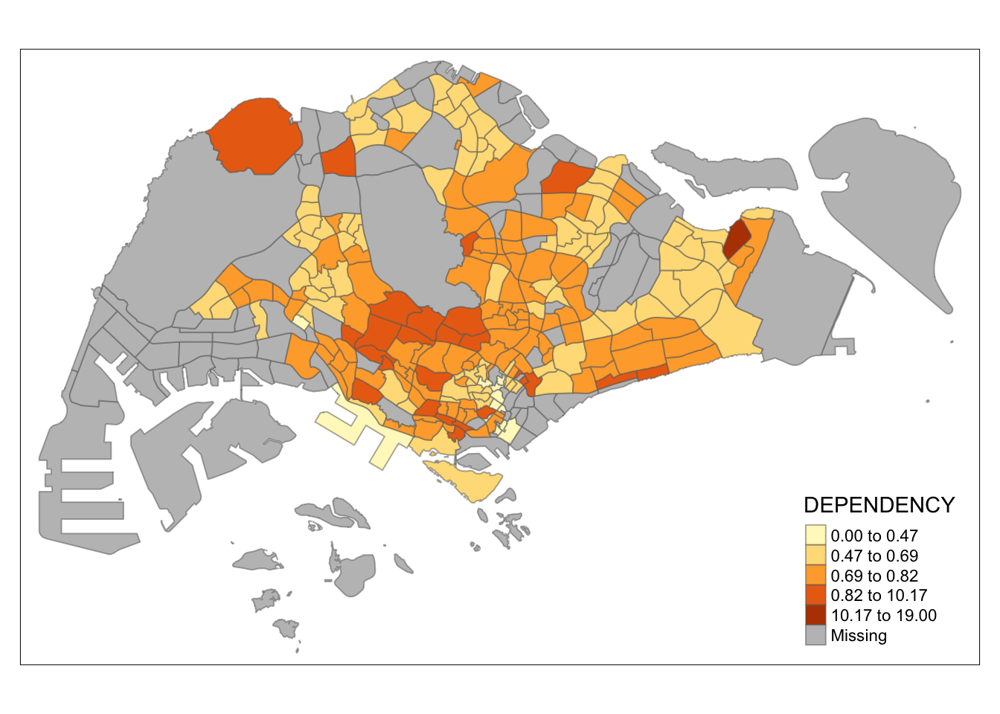
hclust
tm_shape(mpsz_pop2020)+
tm_fill("DEPENDENCY",
n = 5,
style = "hclust") +
tm_borders(alpha = 0.5)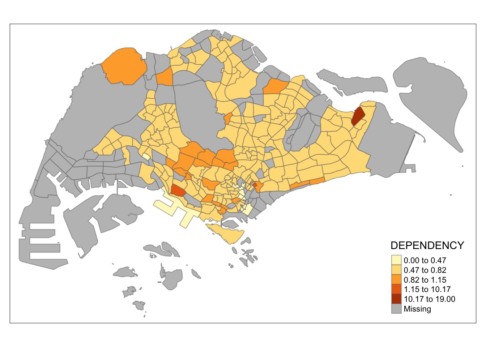
bclust
tm_shape(mpsz_pop2020)+
tm_fill("DEPENDENCY",
n = 5,
style = "bclust") +
tm_borders(alpha = 0.5)Committee Member: 1(1) 2(1) 3(1) 4(1) 5(1) 6(1) 7(1) 8(1) 9(1) 10(1)
Computing Hierarchical Clusteringfisher
tm_shape(mpsz_pop2020)+
tm_fill("DEPENDENCY",
n = 5,
style = "fisher") +
tm_borders(alpha = 0.5)jenks
tm_shape(mpsz_pop2020)+
tm_fill("DEPENDENCY",
n = 5,
style = "jenks") +
tm_borders(alpha = 0.5)Exploring using the same classification methods with different numbers of classes(i.e. 2,6,10,20)
tm_shape(mpsz_pop2020)+
tm_fill("DEPENDENCY",
n = 2,
palette = "Dark2",
style = "kmeans") +
tm_borders(alpha = 0.5)tm_shape(mpsz_pop2020)+
tm_fill("DEPENDENCY",
n = 6,
palette = "Dark2",
style = "kmeans") +
tm_borders(alpha = 0.5)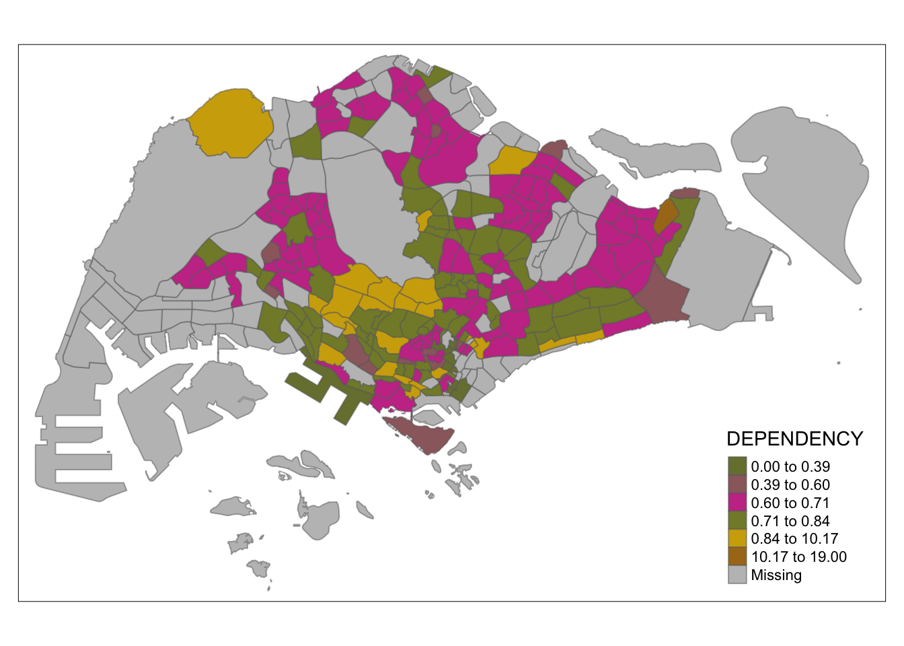
tm_shape(mpsz_pop2020)+
tm_fill("DEPENDENCY",
n = 10,
palette = "Dark2",
style = "kmeans") +
tm_borders(alpha = 0.5)tm_shape(mpsz_pop2020)+
tm_fill("DEPENDENCY",
n = 20,
palette = "Dark2",
style = "kmeans") +
tm_borders(alpha = 0.5)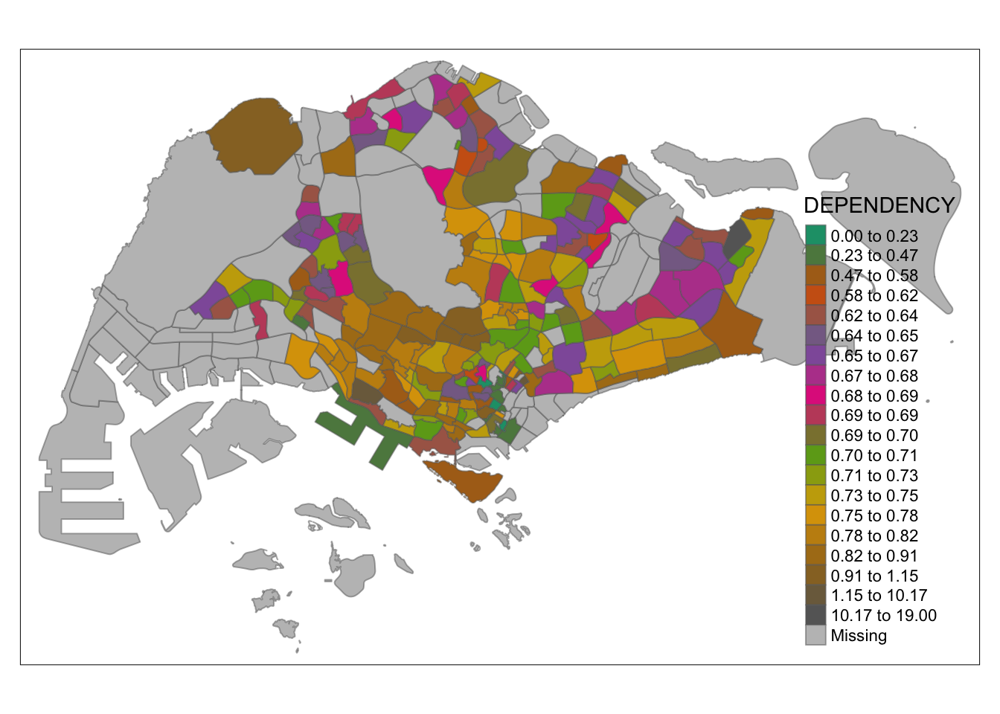
Tip
When n increase, there will be more classification, which will be able to provide more insightful information for us to analysis.
4.3.2 Plotting choropleth map with custom break
For all the built-in styles, the category breaks are computed internally. In order to override these defaults, the breakpoints can be set explicitly by means of the breaks argument to the tm_fill(). It is important to note that, in tmap the breaks include a minimum and maximum. As a result, in order to end up with n categories, n+1 elements must be specified in the breaks option (the values must be in increasing order).
Before we get started, it is always a good practice to get some descriptive statistics on the variable before setting the break points. Code chunk below will be used to compute and display the descriptive statistics of DEPENDENCY field.
summary(mpsz_pop2020$DEPENDENCY) Min. 1st Qu. Median Mean 3rd Qu. Max. NA's
0.0000 0.6519 0.7025 0.7742 0.7645 19.0000 92 With reference to the results above, we set break point at 0.60, 0.70, 0.80, and 0.90. In addition, we also need to include a minimum and maximum, which we set at 0 and 100. Our breaks vector is thus c(0, 0.60, 0.70, 0.80, 0.90, 1.00)
Now, we will plot the choropleth map
tm_shape(mpsz_pop2020)+
tm_fill("DEPENDENCY",
breaks = c(0, 0.60, 0.70, 0.80, 0.90, 1.00)) +
tm_borders(alpha = 0.5)Warning: Values have found that are higher than the highest break4.4 Colour Scheme
tmap supports colour ramps either defined by the user or a set of predefined colour ramps from the RColorBrewer package.
4.4.1 Using ColourBrewer palette
To change the colour, we assign the preferred colour to palette argument of tm_fill()
tm_shape(mpsz_pop2020)+
tm_fill("DEPENDENCY",
n = 6,
style = "quantile",
palette = "Blues") +
tm_borders(alpha = 0.5)To reverse the colour shading, add a “-” prefix
tm_shape(mpsz_pop2020)+
tm_fill("DEPENDENCY",
n = 6,
style = "quantile",
palette = "-Blues") +
tm_borders(alpha = 0.5)4.5 Map Layouts
Map layout refers to the combination of all map elements into a cohensive map. Map elements include among others the objects to be mapped, the title, the scale bar, the compass, margins and aspects ratios. Colour settings and data classification methods covered in the previous section relate to the palette and break-points are used to affect how the map looks.
4.5.1 Map Legend
In tmap, several legend options are provided to change the placement, format and appearance of the legend.
tm_shape(mpsz_pop2020)+
tm_fill("DEPENDENCY",
style = "jenks",
palette = "Blues",
legend.hist = TRUE,
legend.is.portrait = TRUE,
legend.hist.z = 0.1) +
tm_layout(main.title = "Distribution of Dependency Ratio by planning subzone \n(Jenks classification)",
main.title.position = "center",
main.title.size = 1,
legend.height = 0.45,
legend.width = 0.35,
legend.outside = FALSE,
legend.position = c("right", "bottom"),
frame = FALSE) +
tm_borders(alpha = 0.5)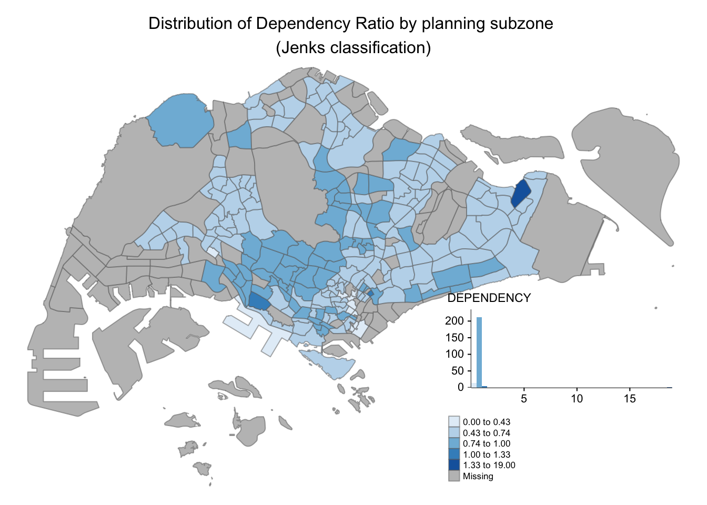
4.5.2 Map style
tmap allows a wide variety of layout settings to be changed. They can be called by using tmap_style().
tm_shape(mpsz_pop2020)+
tm_fill("DEPENDENCY",
style = "quantile",
palette = "-Greens") +
tm_borders(alpha = 0.5) +
tmap_style("classic")tmap style set to "classic"other available styles are: "white", "gray", "natural", "cobalt", "col_blind", "albatross", "beaver", "bw", "watercolor" tmap_style()current tmap style is "classic"other available styles are: "white", "gray", "natural", "cobalt", "col_blind", "albatross", "beaver", "bw", "watercolor" tm_shape(mpsz_pop2020)+
tm_fill("DEPENDENCY",
style = "quantile",
palette = "-Greens") +
tm_borders(alpha = 0.5) +
tmap_style("cobalt")tmap style set to "cobalt"other available styles are: "white", "gray", "natural", "col_blind", "albatross", "beaver", "bw", "classic", "watercolor" 4.5.3 Cartographic Furniture
Beside map style, tmap also also provides arguments to draw other map furniture such as compass, scale bar and grid lines.
In the code chunk below, tm_compass(), tm_scale_bar() and tm_grid() are used to add compass, scale bar and grid lines onto the choropleth map.
tm_shape(mpsz_pop2020)+
tm_fill("DEPENDENCY",
style = "quantile",
palette = "Blues",
title = "No. of persons") +
tm_layout(main.title = "Distribution of Dependency Ratio \nby planning subzone",
main.title.position = "center",
main.title.size = 1.2,
legend.height = 0.45,
legend.width = 0.35,
frame = TRUE) +
tm_borders(alpha = 0.5) +
tm_compass(type="8star", size = 2) +
tm_scale_bar(width = 0.15) +
tm_grid(lwd = 0.1, alpha = 0.2) +
tm_credits("Source: Planning Sub-zone boundary from Urban Redevelopment Authorithy (URA)\n and Population data from Department of Statistics DOS",
position = c("left", "bottom"))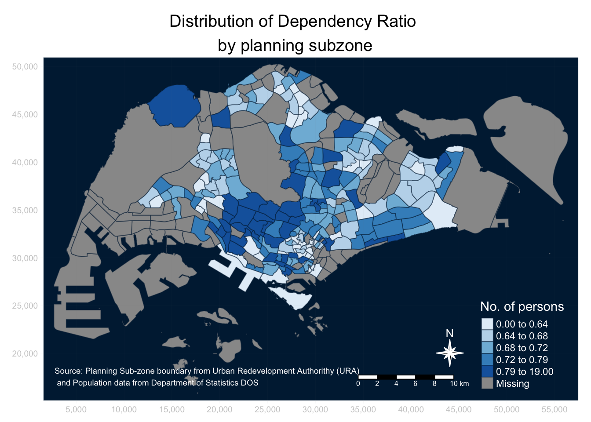
To reset the default style
tmap_style("white")tmap style set to "white"other available styles are: "gray", "natural", "cobalt", "col_blind", "albatross", "beaver", "bw", "classic", "watercolor" 4.6 Drawing Small Multiple Choropleth Maps
Small multiple maps, also referred to as facet maps, are composed of many maps arrange side-by-side, and sometimes stacked vertically. Small multiple maps enable the visualisation of how spatial relationships change with respect to another variable, such as time.
In tmap, small multiple maps can be plotted in three ways:
by assigning multiple values to at least one of the asthetic arguments,
by defining a group-by variable in tm_facets(), and
by creating multiple stand-alone maps with tmap_arrange().
4.6.1 By assigning multiple values to at least one of the aesthetic arguments
In this example, small multiple choropleth maps are created by defining ncols in tm_fill()
tm_shape(mpsz_pop2020)+
tm_fill(c("YOUNG", "AGED"),
style = "equal",
palette = "plasma") +
tm_layout(legend.position = c("right", "bottom")) +
tm_borders(alpha = 0.5) +
tmap_style("white")tmap style set to "white"other available styles are: "gray", "natural", "cobalt", "col_blind", "albatross", "beaver", "bw", "classic", "watercolor" 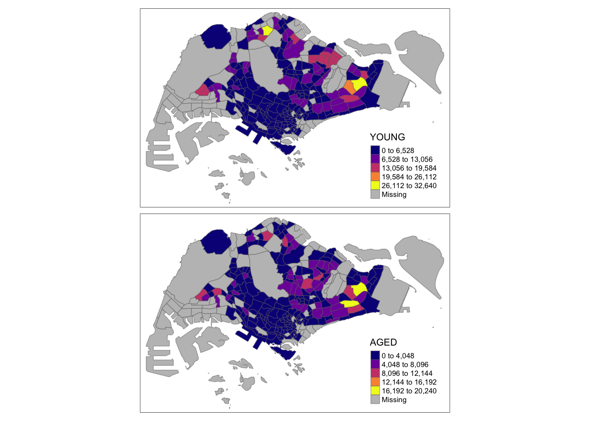
In this example, small multiple choropleth maps are created by assigning multiple values to at least one of the aesthetic arguments
tm_shape(mpsz_pop2020)+
tm_polygons(c("DEPENDENCY","AGED"),
style = c("equal", "quantile"),
palette = list("Blues","Greens")) +
tm_layout(legend.position = c("right", "bottom"))4.6.2 By defining a group-by variable in tm_facets()
In this example, multiple small choropleth maps are created by using tm_facets().
tm_shape(mpsz_pop2020) +
tm_fill("DEPENDENCY",
style = "quantile",
palette = "Blues",
thres.poly = 0) +
tm_facets(by="REGION_N",
free.coords=TRUE,
drop.shapes=TRUE) +
tm_layout(legend.show = FALSE,
title.position = c("center", "center"),
title.size = 20) +
tm_borders(alpha = 0.5)Warning: The argument drop.shapes has been renamed to drop.units, and is
therefore deprecated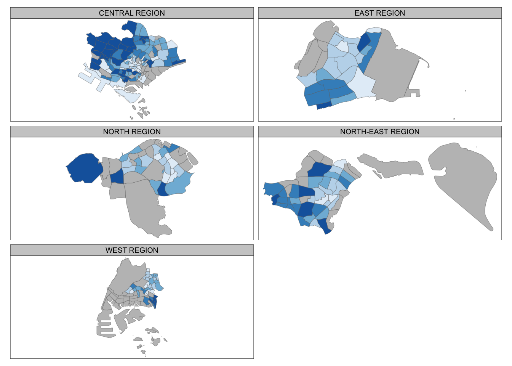
4.6.3 By creating multiple stand-alone maps with tmap_arrange()
In this example, multiple small choropleth maps are created by creating multiple stand-alone maps with tmap_arrange().
youngmap <- tm_shape(mpsz_pop2020)+
tm_polygons("YOUNG",
style = "quantile",
palette = "Blues")
agedmap <- tm_shape(mpsz_pop2020)+
tm_polygons("AGED",
style = "quantile",
palette = "Blues")
tmap_arrange(youngmap, agedmap, asp=1, ncol=2)4.7 Mappping Spatial Object Meeting a Selection Criterion
Instead of creating small multiple choropleth map, you can also use selection funtion to map spatial objects meeting the selection criterion.
tm_shape(mpsz_pop2020[mpsz_pop2020$REGION_N=="CENTRAL REGION", ])+
tm_fill("DEPENDENCY",
style = "quantile",
palette = "Blues",
legend.hist = TRUE,
legend.is.portrait = TRUE,
legend.hist.z = 0.1) +
tm_layout(legend.outside = TRUE,
legend.height = 0.45,
legend.width = 5.0,
legend.position = c("right", "bottom"),
frame = FALSE) +
tm_borders(alpha = 0.5)Warning in pre_process_gt(x, interactive = interactive, orig_crs =
gm$shape.orig_crs): legend.width controls the width of the legend within a map.
Please use legend.outside.size to control the width of the outside legend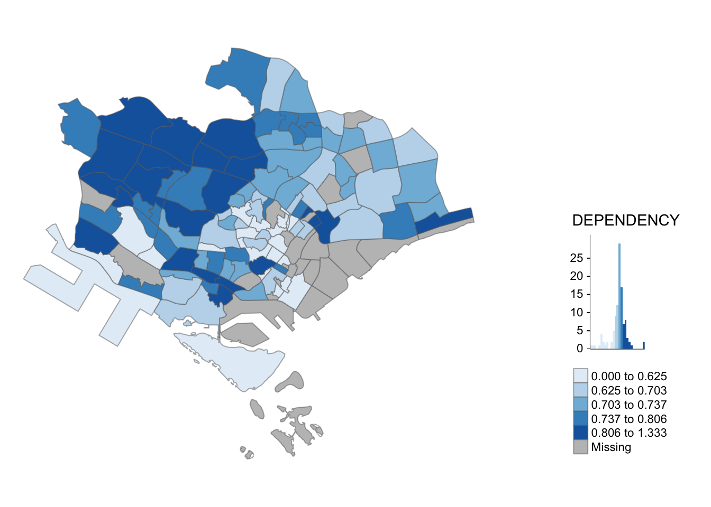
5. References
Tutorial provided by Professor Kam Tin Seong (SMU) for IS415 - Geospatial Analytics and Application
Link : https://r4gdsa.netlify.app/chap02.html#by-creating-multiple-stand-alone-maps-with-tmap_arrange